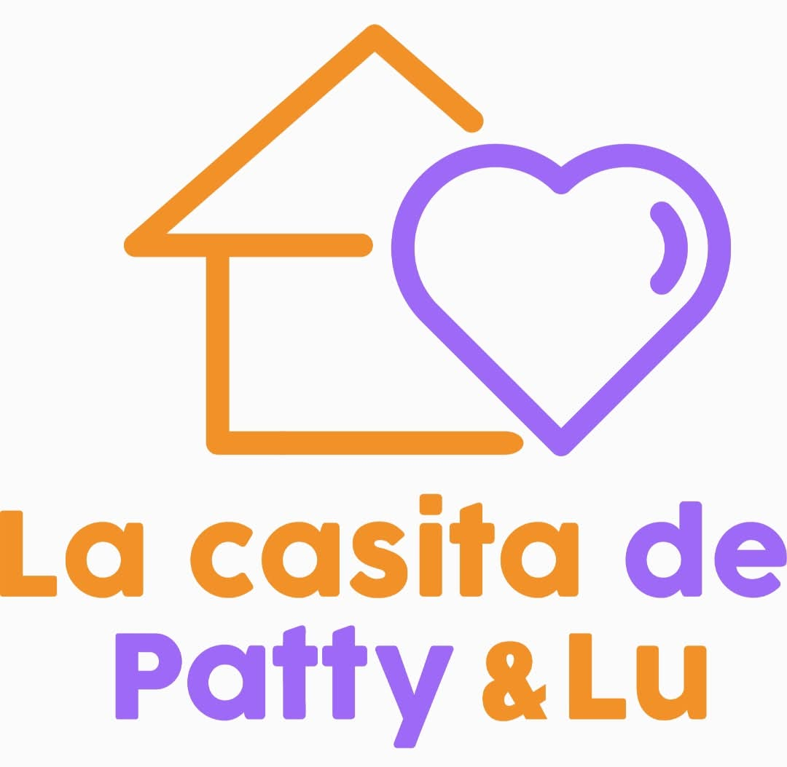

Hola, soy un Ingeniero Informático
Yo trabajo con computadoras, ideas y tecnología. Mi misión es crear programas que ayuden a las personas a hacer sus tareas de forma más fácil, rápida y segura.
Un Ingeniero Informático lo explica fácil
Cada dibujo representa una parte del trabajo de un Ingeniero Informático.
Creo programas
Un programa es como una receta que le dice a la computadora qué hacer.
Resuelvo problemas
Busco una solución cuando algo es difícil, lento o desordenado.
Cuido datos
Ayudo a proteger la información para que esté segura.
Ayudo a personas
La tecnología sirve para estudiar, trabajar y comunicarnos mejor.
¿Cómo trabaja un Ingeniero Informático?
Escucho
un Ingeniero Informático pregunta qué se necesita.
Pienso
un Ingeniero Informático imagina una solución.
Programo
un Ingeniero Informático crea el programa.
Pruebo
un Ingeniero Informático revisa que funcione.
Las herramientas de un Ingeniero Informático
Para trabajar, un Ingeniero Informático usa varias herramientas. Algunas se ven y otras están dentro de la computadora.
La computadora entiende instrucciones
Mini juego para los niños
Haz clic en lo que sí hace un Ingeniero Informático.
Programa
Cuida dinosaurios
Protege datos
Hace pizzas
Mensaje final para los niños
“Muchas gracias amiguitos por escucharme con atención. Hoy aprendimos que un Ingeniero Informático usa la tecnología para ayudar a las personas. Recuerden que con imaginación, esfuerzo y muchas ganas de aprender, ustedes también pueden crear cosas maravillosas. ¡Gracias!”